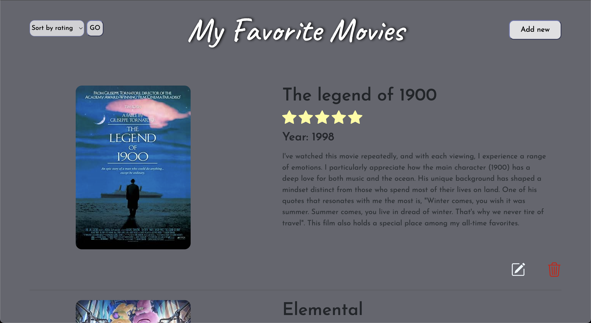
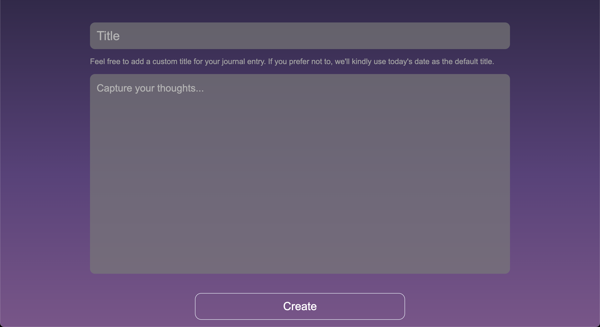
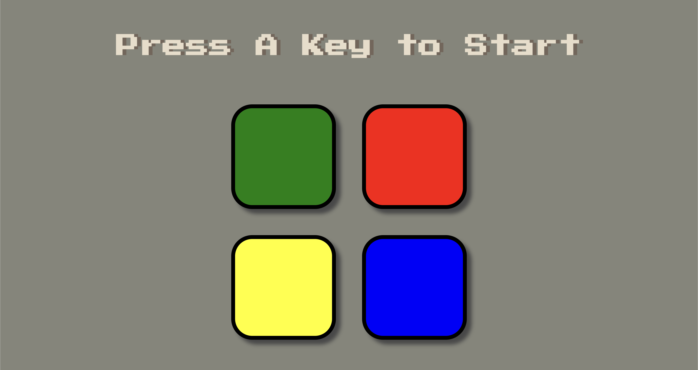
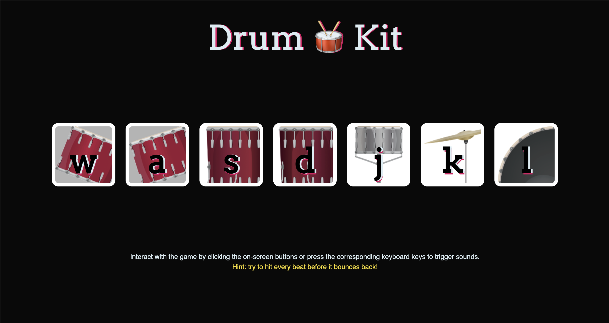
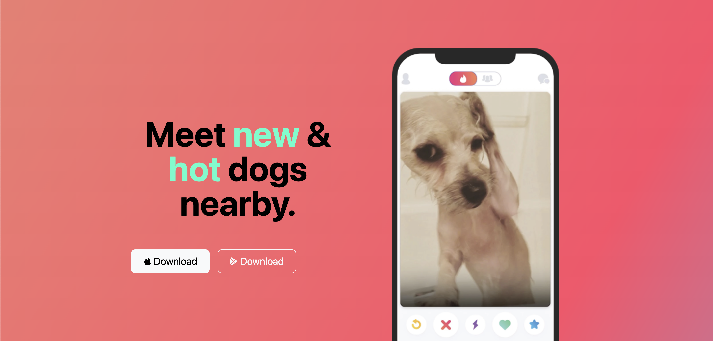

clicking on the image.
•My Favorite Movies
This movie journal app provides a user-friendly platform for documenting and managing your favorite movies with ease. Users can input movie titles, assign ratings on a 0 to 5-star scale, and share personalized reviews, creating a comprehensive movie journaling experience. Leveraging the OMDb API, the application dynamically retrieves movie poster images and release years based on user-submitted titles, enhancing the visual appeal and completeness of each entry. Behind the scenes, the app smoothly integrates with a PostgreSQL database, enabling efficient storage, updating, deletion, and retrieval of recorded movie data. This ensures a smooth and streamlined user experience. Users can also sort entries by rating or recency, providing flexibility and control over their movie journal. Join and immerse yourself in the world of cinematic memories!

Clicking on this image will redirect you to my GitHub repository.
•Cocktail Connoisseur
Welcome to Cocktail Connoisseur, your ultimate destination for crafting and discovering exquisite cocktail recipes. This web application connects with TheCocktailDB API, managing diverse requests through the Axios npm package. Operating locally, it provides essential functionalities and user-friendly features, allowing users to tailor their cocktail search with various selections or opt for a spontaneous twist through filtered recipes. The platform offers a visually enticing experience, showcasing vibrant images, detailed instructions, and precise ingredient quantities. By seamlessly blending frontend finesse with backend efficiency and incorporating an interactive filtering mechanism, Cocktail Connoisseur creates a harmonious space for users to explore, discover, and concoct their favorite cocktails effortlessly. Cheers to an immersive and personalized mixology journey with this Cocktail Recipe Generator!

Clicking on this image will redirect you to my GitHub repository.
•Personal Journal App
The journal application is meticulously built from scratch, fluidly integrating front-end and back-end development to adeptly handle website requests and responses. Designed for a singular user's experience, it operates efficiently on a local host, ensuring data is stored locally in a json file for a simple and personalized environment.. Users can enjoy essential functionalities such as Journal Creation, allowing them to generate entries with personalized titles and content. The Automatic Date Title feature adds a convenient touch by providing date-based titles for entries without user-specified titles. Journal Retrieval enables effortless access to past entries, while Journal Editing allows modifications to existing content. With the added convenience of Journal Deletion, users have the flexibility to remove entries as needed, shaping an intimate and user-centric journaling experience.

Clicking on this image will redirect you to my GitHub repository.
•Simon's Sequence Challenge
"Simon's Sequence Challenge" is a memory-testing web game based on the classic Simon game, primarily designed for desktop or laptop users. Using JavaScript and jQuery, this project showcases dynamic patterns and error detection, engaging players in a test of memory and attention. Experience the power of JavaScript Math functions and higher-order functions in a game that challenges you to match increasingly complex sequences. Perfect for quick and fun mental exercise!

•Drum Kit
Explore the rhythm-rich world of "Drum Kit," a web game optimized for desktop and laptop users. Powered by JavaScript, it offers dynamic audio, responsive interactions, and a showcase of various advanced programming techniques. Immerse yourself in an interactive experience highlighted by concepts like anonymous functions, higher-order functions, and callback functions. This musical adventure comes alive with each click or keyboard tap!

•Tindog
Introducing "Tindog," a playful canine twist on the popular social app "Tinder." This website is a showcase of technical skills, smoothly integrating Bootstrap frameworks, CSS grids and flexboxes, responsiveness, and dynamic backgrounds. It's important to note that while the buttons look clickable, this project doesn't lead to further files or documents – it's a self-contained one-page showpiece. Explore the bark-tastic world of Tindog, where technology meets tail-wagging fun!
